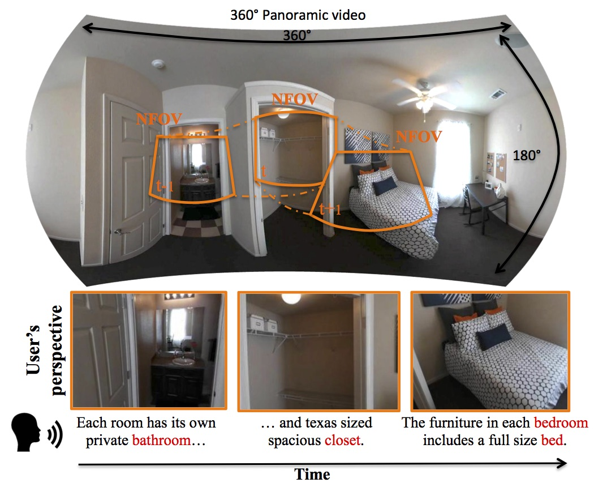

Yi-Chun Chen
yichun8447 at gmail dot com
[CV]
[GitHub]
[LinkedIn]
About
I am a research assistant in the
Vision Science Lab
at National Tsing Hua University, supervised by
Professor Min Sun
.
I'm mainly interested in deep learning, especially applied to computer vision in robotics.
Publications
Anonymous
Shih-Han Chou,
Yi-Chun Chen
, Cheng Sun,
Kuo-Hao Zeng, Ching-Ju Cheng, Jianlong Fu, Min Sun
Under Review
Anonymous
Meng-Li Shih,
Yi-Chun Chen
, Chia-Yu Tung,
Cheng Sun, Ching-Ju Cheng, Liwei Chan,
Srenivas Varadarajan, Min Sun
Under Review

Self-view Grounding Given a Narrated 360° Video
Shih-Han Chou,
Yi-Chun Chen
, Kuo-Hao Zeng,
Hou-Ning Hu, Jianlong Fu, Min Sun
AAAI 2018
[project website]
[arXiv]
[code(TBD)]
Projects
TBD
Industry
2015 Summer Intern
HIWIN Technologies Corporation